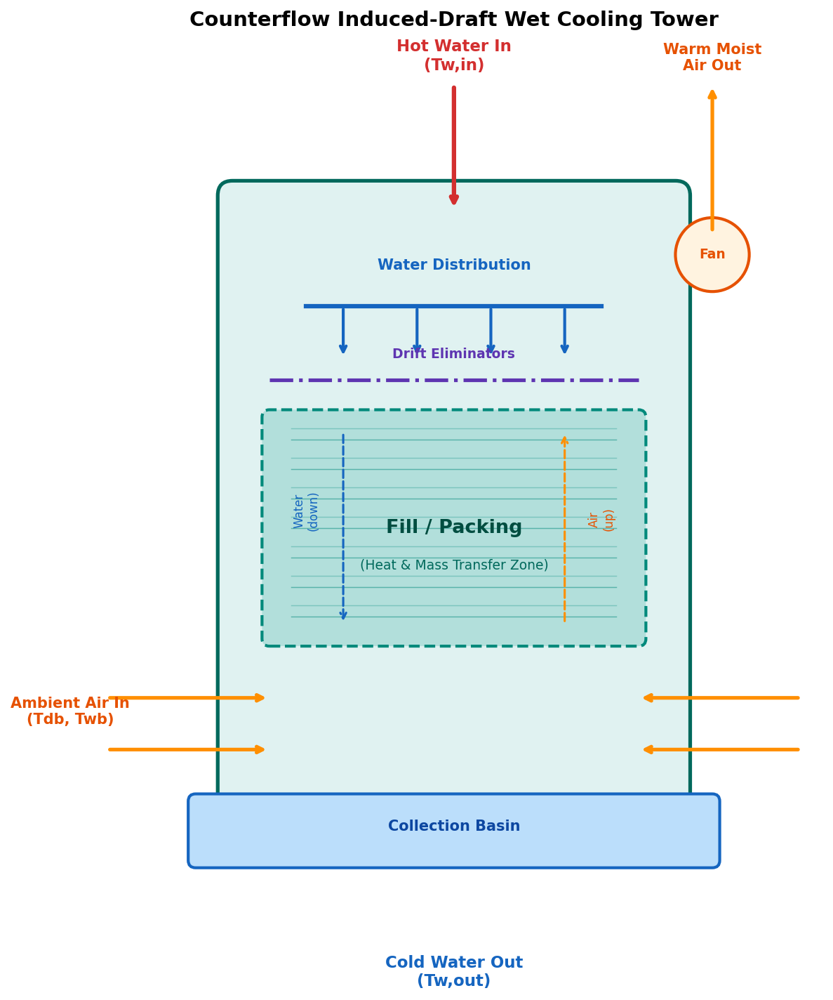
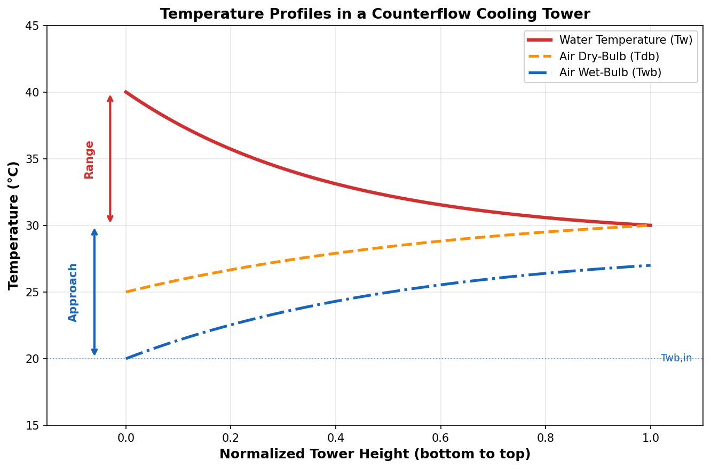
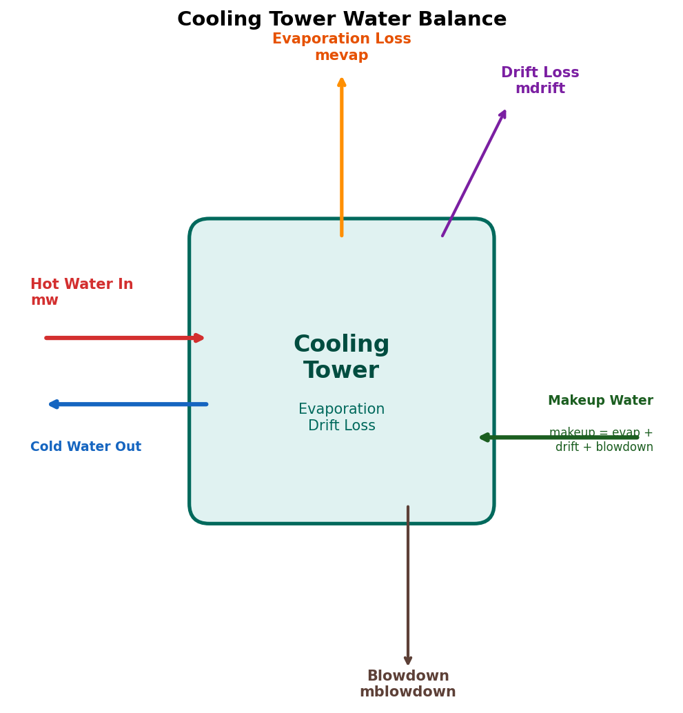

Cooling Tower Fundamentals¶
Overview¶
A wet cooling tower is a heat rejection device that cools a water stream by evaporating a small portion of it into an ambient air stream. The process exploits the high latent heat of vaporization of water — approximately 2,450 kJ/kg at typical operating temperatures — making evaporative cooling far more effective than sensible heat exchange alone.
Cooling towers are ubiquitous in power generation, petrochemical plants, HVAC systems, and industrial processes where large quantities of low-grade heat must be dissipated to the environment.

Classification of Cooling Towers¶
By Airflow Configuration¶
| Type | Description | Advantages | Disadvantages |
|---|---|---|---|
| Counterflow | Air flows upward, water flows downward | Maximum thermal efficiency, compact design | Higher air pressure drop |
| Crossflow | Air flows horizontally through falling water | Lower pressure drop, easier maintenance | Larger footprint, lower efficiency |
Current Implementation
This DWSIM unit operation implements the counterflow configuration. Crossflow support is planned for future releases.
By Air Movement Mechanism¶
| Type | Description |
|---|---|
| Induced Draft | Fan at the tower top pulls air through the fill (most common) |
| Forced Draft | Fan at the base pushes air into the tower |
| Natural Draft | Hyperbolic chimney creates buoyancy-driven airflow (large power plants) |
Key Terminology¶
Understanding cooling tower performance requires familiarity with these fundamental quantities:

Range¶
The cooling range (or simply "range") is the temperature difference achieved by the cooling tower:
Typical values: 5 to 20 K in industrial applications.
Approach¶
The approach is the difference between the cold water outlet temperature and the ambient wet-bulb temperature:
The approach is always positive — a cooling tower cannot cool water below the ambient wet-bulb temperature. Typical values: 3 to 8 K. An approach below 3 K requires very large towers and is generally uneconomical.
Physical Limit
The wet-bulb temperature represents the theoretical minimum achievable water temperature. In practice, economic and physical constraints prevent approaching this limit closely.
Tower Efficiency¶
The cooling tower efficiency (or effectiveness) is defined as:
Typical efficiencies range from 70% to 85%.
L/G Ratio (Water-to-Air Mass Flow Ratio)¶
The L/G ratio is the mass flow rate of water divided by the mass flow rate of dry air:
This is one of the most important design parameters. Typical values: 0.8 to 2.5. The L/G ratio determines the slope of the air operating line on the enthalpy diagram and significantly affects tower performance.
KaV/L — Merkel Number (NTU)¶
The Merkel number (also called the tower characteristic or number of transfer units, NTU) quantifies the difficulty of the cooling task:
where:
- \( K \) = mass transfer coefficient (kg/m²·s)
- \( a \) = contact area per unit volume (m²/m³)
- \( V \) = active volume of fill packing (m³)
- \( L \) = water mass flow rate (kg/s)
- \( c_{pw} \) = specific heat of water (kJ/kg·K)
- \( h'_s(T_w) \) = enthalpy of saturated air at water temperature
- \( h_a(T_w) \) = enthalpy of air at that position in the tower
Higher KaV/L values indicate more difficult cooling tasks (small approach or large range).
Heat and Mass Transfer Mechanisms¶
In a wet cooling tower, heat is transferred from the water to the air by two simultaneous mechanisms:
1. Sensible Heat Transfer¶
Convective heat transfer due to the temperature difference between water and air:
2. Latent Heat Transfer (Evaporation)¶
Mass transfer of water vapor from the saturated film at the water surface to the bulk air:
where \( h_D \) is the mass transfer coefficient, \( w_s \) and \( w_a \) are the saturation and bulk humidity ratios, and \( h_{fg} \) is the latent heat of vaporization.
Dominant Mechanism
In most operating conditions, latent heat transfer (evaporation) accounts for approximately 65-80% of the total heat rejection. This is why the wet-bulb temperature — not the dry-bulb — is the controlling ambient parameter.
Water Balance¶

Evaporation Loss¶
Water lost by evaporation into the air stream. This is the primary cooling mechanism:
A practical rule of thumb: approximately 1% of the circulation flow is evaporated per 7 K of cooling range (Cooling Technology Institute, 2000).
Drift Loss¶
Small water droplets carried away by the exhaust air. Modern drift eliminators limit this to:
Typical drift loss: 0.001% to 0.2% of circulation flow. In this implementation, the default is 0.1%.
Blowdown¶
Water intentionally discharged from the basin to control dissolved solids concentration:
where \( N_{cycles} \) is the cycles of concentration (typically 3 to 7).
Makeup Water¶
Total water that must be added to compensate all losses:
Fan Power¶
For induced-draft towers, the fan power is calculated from:
where:
- \( \Delta P_{air} \) = air-side pressure drop across the tower (Pa)
- \( \dot{V}_{air} \) = volumetric air flow rate (m³/s)
- \( \eta_{fan} \) = fan mechanical efficiency (typically 0.65 to 0.80)
References¶
-
Cooling Technology Institute (CTI). CTI Toolkit — Cooling Tower Performance Prediction. CTI, Houston, TX, 2000. https://www.cti.org/
-
Kroger, D.G. Air-Cooled Heat Exchangers and Cooling Towers: Thermal-Flow Performance Evaluation and Design. PennWell Books, Tulsa, OK, 2004. ISBN: 978-0878148967.
-
ASHRAE. ASHRAE Handbook — HVAC Systems and Equipment, Chapter 40: Cooling Towers. American Society of Heating, Refrigerating and Air-Conditioning Engineers, Atlanta, GA, 2020. https://www.ashrae.org/